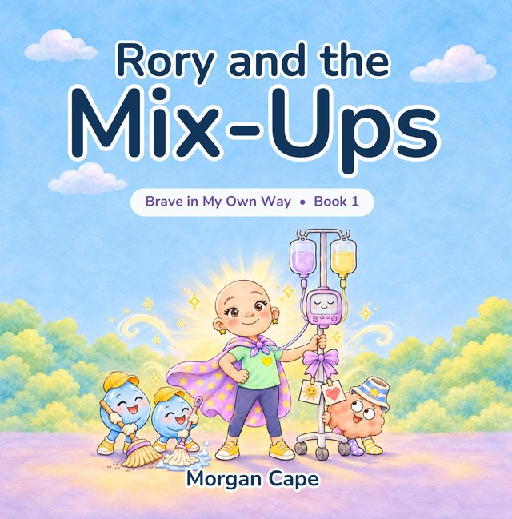
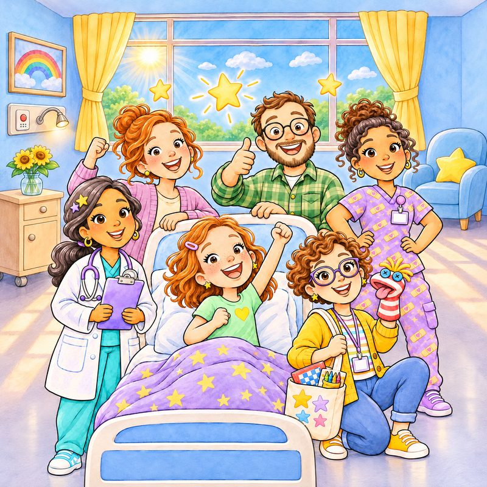
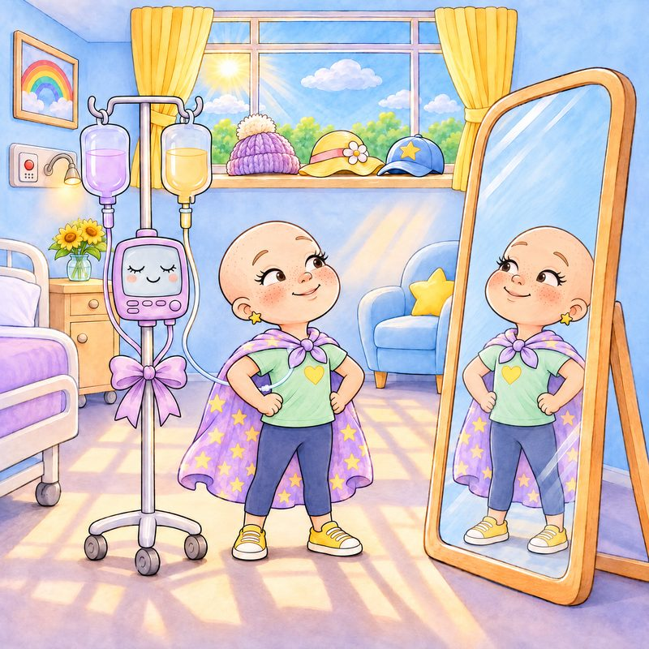
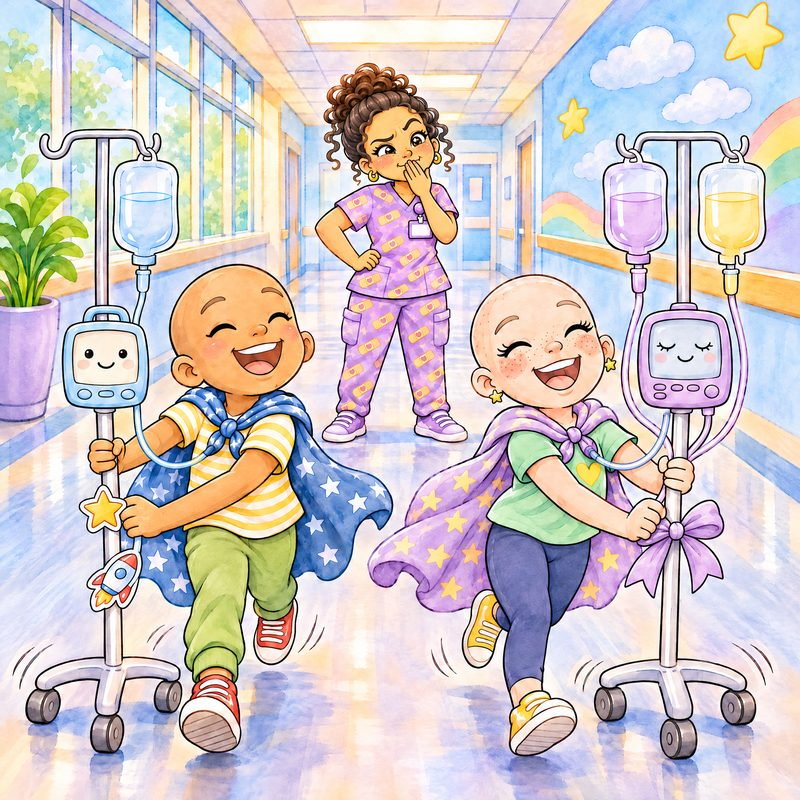

Picture book · Ages 4 to 8
Rory and the Mix-Ups
A gentle, hopeful story for children going through cancer treatment, and for the people who love them.

Brave in My Own Way, Book 1
by Morgan Cape
Get the paperback on AmazonPaperback, 32 pages, 8.5 x 8.5 in, full color. $12.99.
About the book
Rory loves three things most of all: cartwheels, her dog Pickles, and her own bed with the squeaky spring.
But now Rory is staying at the hospital, where some of her cells have gotten their instructions all mixed up.
With her Hero Squad, an IV pole named Lulu, and a blanket that becomes a cape, Rory learns that brave doesn't mean not scared. Brave means doing it, even while you're scared.
Inside the book



For grown-ups
In the book, the Mix-Ups are cancer cells and the Cleanup Crew is the medicine. If your family already has its own words, use those. Rory has a long hospital stay; your child's treatment may look very different, and that's okay. Every feeling is welcome. At the back there's a My Hero Squad page your child can fill in with their own doctor, nurse, family and sidekick.
Keep the story going
Rory and her friend Matty also star in the Matty and Rory Activity Pack: 32 printable pages of coloring, mazes, letter tracing and word searches, plus a version kids can play on a tablet.
This book is not medical advice. Your child's care team is always the best place for questions.